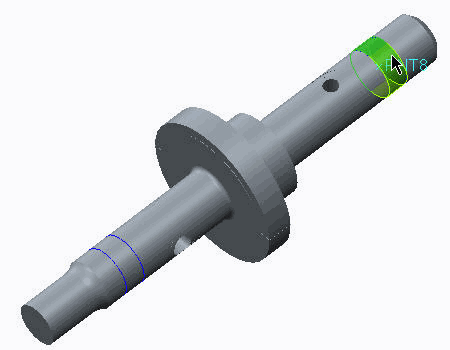
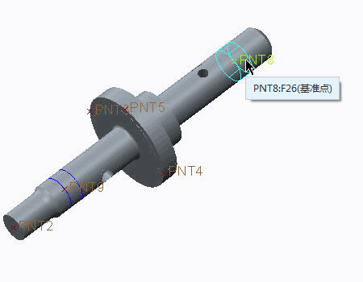
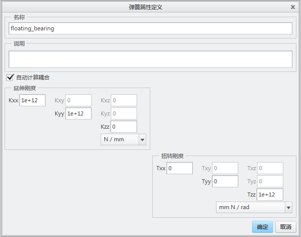
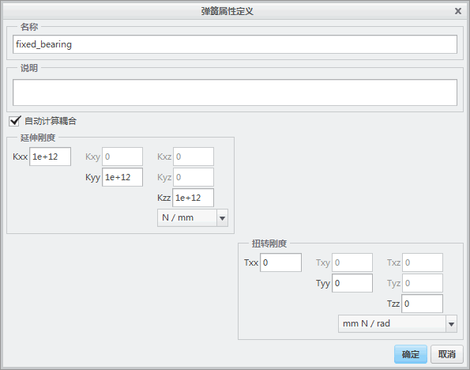
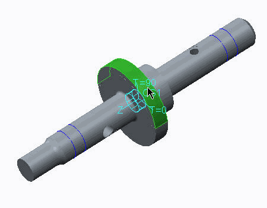
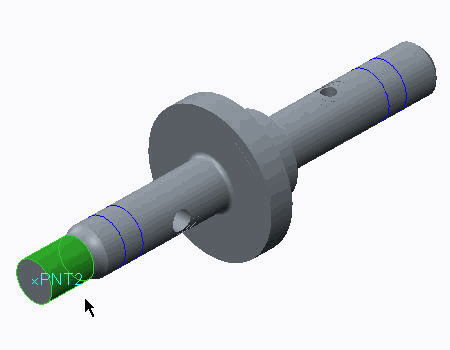
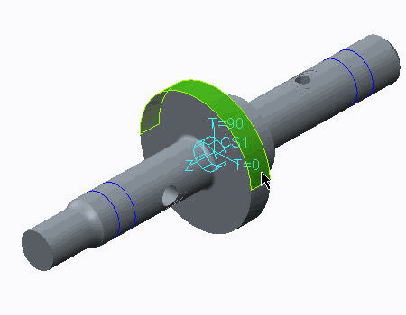
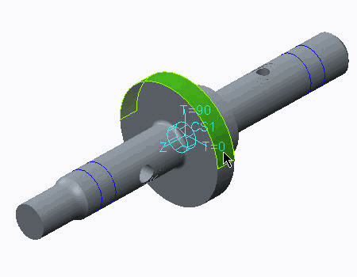

练习: 定义力、力矩和压力
目标
成功完成此练习后，您将能够：
- 定义约束。
- 定义力。
- 定义并运行静态分析。
- 创建结果窗口。
假定背景
在本练习中，将探讨产生于额外载荷下的滑轮轴的应力和变形。结构元件将经受多种类型的载荷 (压力和扭矩)。本练习旨在显示其效应的结合方式。在本例中，假定只有材料线性。因此，载荷效应可以线性结合。
在本例中，有关载荷大小的知识将根据软带原理进行模拟或评估。在以分析方式估计载荷值或约束系统时，请始终确保使用合理的工程参考。
在皮带传动装置中，轴在加载时使用了如下图所示的折弯和扭矩。要转换一个 50 N 的扭矩，您可以利用软带原理和如图所示的方程。

研究这些载荷元件并思考如何对其分组，以检查各个效果。可使用三种主要载荷集：
- 来自带预应力的压力。
- 外部扭矩。
- 来自已转换扭矩的额外的带压力。
在本练习中，使用下列值和属性：
| 载荷 | 定义 | 值 |
| T | 要转换的扭矩 | 50 N |
| B1req | 转换扭矩所需的最小带预应力 | 1824.1 N |
| B1 | 所选的带预应力 (带的从动边上的力) | 2500 N |
| B2 | 带的载荷边上的拉力 | 5357.14 N |
| Ft | 切向力 (转换扭矩) | 2857.14 N |
| d | 牵引辘直径 | 35 mm |
| w | 带宽度 | 6 mm |
| pB1 | 来自所选带预应力的带压力 | 23.8095 MPa |
| pFTmax | 来自切向力的最大额外带压力 | 27.2109 MPa |
| fFt | 来自切向力的带切向引力 | 8.6615 MPa |
| μ | 带滑轮摩擦系数 | 0.3 |
| α | 包角 | 180°=3.1415 rad |
 “拭除未显示的”(Erase Not Displayed)
“拭除未显示的”(Erase Not Displayed) 
 Simulate_Modeling\DefineForce
Simulate_Modeling\DefineForce
 TRACTION_SHEAVE_SHAFT_B.PRT
TRACTION_SHEAVE_SHAFT_B.PRT
-
任务 1. 调查模型属性。
1. 单击“文件”(File) > “准备”(Prepare) > “模型属性”(Model Properties)。将出现“模型属性”(Model Properties) 对话框。
2. 审阅模型中所使用的单位。要关闭“模型属性”(Model Properties) 对话框，单击“关闭”(Close)。
3. 在模型树中，展开“材料”(Materials)。右键单击 HIGH_STRENGTH_STEEL，然后选择“编辑定义”(Edit Definition)。将出现“材料定义”(Material Definition) 对话框。
4. 查看杨氏模量 (E) 值和泊松比值。除应力和变形外，您还将绘制失效指标图。因此，已为此材料定义失效准则。它是一种塑性材料且该材料的屈服强度已被指定。单击“确定”(Ok) 以关闭“材料定义”(Material Definition) 对话框。
5. 审阅在模型中创建的曲面区域和体积块区域。它们用于约束和载荷定义。要标识这些模拟特征，请展开 Simulation Features。单击每个特征以在模型中对其进行标识。曲面区域有助于在模型中定义约束。体积块区域有助于定义载荷。
6. 通过在模型树中单击 PNT2、PNT3、PNT4 和 PNT5，查看模型中所定义的基准点。这些点有助于在模型中定义约束。
-
任务 2. 在模型中定义约束。
1. 在模型中定义受力连接。在功能区中，选择“精细模型”(Refine Model) 选项卡。
2. 从“连接”(Connections) 组中单击“受力连接”(Weighted Link)
 。将出现“受力连接定义”(Weighted Link Definition) 对话框。
。将出现“受力连接定义”(Weighted Link Definition) 对话框。
3. 从“独立侧”(Independent Side) 下拉列表中选择“曲面”(Surfaces)。选择模型上的圆柱曲面 Surf:F30，如图所示。
4. 启用“点显示”(Point Display) 。在“受力连接定义”(Weighted Link Definition) 对话框中的“从属侧”(Dependent Side) 部分，在“点”(Point) 字段中单击。在模型上选择 PNT8，如图所示。
5. 单击“确定”(OK)。
6. 在轴的另一端重复此过程以创建第二个受力连接。选择 PNT9 作为“从属侧”(Dependent Side) 点。
7. 在“理想化”(Idealizations) 组中单击“弹簧”(Spring) 。将出现“弹簧定义”(Spring Definition) 对话框。
8. 完成以下步骤：
- 在“类型”(Type) 下拉列表中选择“基础”(To Ground)。
- 在“参考”(References) 部分中选择“单一”(Single)。
- 在模型上选择 PNT8。
9. 在“属性”(Properties) 部分中，单击“更多”(More)。将出现“弹簧属性”(Spring Properties) 对话框。
10. 单击“新建”(New)。将出现“弹簧属性定义”(Spring Property Definition) 对话框。
11. 完成“弹簧属性定义”(Spring Property Definition) 对话框，如图所示。
12. 在“弹簧属性定义”(Spring Property Definition) 对话框中，单击“确定”(OK)。
13. 在“弹簧属性”(Spring Properties) 对话框中，单击“确定”(OK)。
14. 在“弹簧定义”(Spring Definition) 对话框中，单击“确定”(OK)。
15. 在轴的另一端为 PNT9 定义第二个弹簧元素“接地”(To Ground)。如图所示完成“弹簧属性定义”(Spring Property Definition) 对话框并单击“确定”(OK) 以返回到“弹簧属性”(Spring Properties) 对话框。
16. 单击“确定”(OK) 关闭“弹簧属性”(Spring Properties) 和“弹簧定义”(Spring Definition) 对话框，并完成弹簧定义。
17. 除了刚刚创建的两个弹簧元素之外，还需要创建连接 PNT8 和 PNT9 这两个点的“虚拟”弹簧元素。绕过由 Creo Simulate 所进行的有关“基础弹簧”的错误检查时，需要该元素。在“理想化”(Idealizations) 组中单击“弹簧”(Spring) 。将出现“弹簧定义”(Spring Definition) 对话框。
18. 完成以下步骤：
- 在“类型”(Type) 下拉列表中选择“简单”(Simple)。
- 在“参考”(References) 部分中选择“点-点”(Point-Point)。
- 在模型上选择 PNT8 和 PNT9。
- 在“属性”(Properties) 部分，从“延伸力-偏转变化”(Extensional Force-Deflection Variation) 下拉列表中选择“恒定刚度”(Constant Stiffness)。
- 在“延伸刚度”(Extensional Stiffness) 字段中键入 0.001。
- 在“扭转刚度”(Torsional Stiffness) 字段中键入 0。
19. 单击“确定”(OK) 以关闭“弹簧定义”(Spring Definition) 对话框，并完成弹簧定义。
-
任务 3. 定义模型载荷。
1. 定义模拟带预加载荷的载荷集。载荷将在已定义的柱坐标系中进行定义。在功能区中，选择“主页”(Home) 选项卡。
2. 在“载荷”(Loads) 组中单击“力/力矩载荷”(Force/Moment Load)
 。将出现“力/力矩载荷”(Force/Moment Load) 对话框。
。将出现“力/力矩载荷”(Force/Moment Load) 对话框。
3. 在“集的成员”(Member of Set) 部分中，单击“新建”(New)。将出现“载荷集定义”(Load Set Definition) 对话框。
4. 在“名称”(Name) 字段中键入 Belt_Preload。单击“确定”(OK)。
5. 选择模型上的弯曲曲面，如图所示。一个曲面应显示在选择查询范围中。
6. 在“力/力矩载荷”(Force/Moment Load) 对话框中，在“属性”(Properties) 部分中选择“选定”(Selected)。
7. 在模型树中，展开“模拟特征”(Simulation Features)，然后选择 CS1。
8. 从“分布”(Distribution) 下拉列表中选择“单位面积上的力”(Force Per Unit Area)。
9. 在“力”(Force) 部分中，在 R 字段中键入 -23.8095。
10. 单击“预览”(Preview) 以查看载荷。
11. 单击“确定”(OK)。
12. 在轴中定义模拟扭矩的载荷。此扭矩载荷集具有两个载荷。第一个载荷是在轴的末端定义的已转换扭矩。在功能区中，选择“主页”(Home) 选项卡。
13. 在“载荷”(Loads) 组中单击“力/力矩载荷”(Force/Moment Load)
。将出现“力/力矩载荷”(Force/Moment Load) 对话框。
14. 在“集的成员”(Member of Set) 部分中，单击“新建”(New)。将出现“载荷集定义”(Load Set Definition) 对话框。
15. 在“名称”(Name) 字段中键入 Torque。单击“确定”(OK)。
16. 选择模型上的弯曲曲面，如图所示。两个曲面应显示在选择查询范围中。
17. 在“力/力矩载荷”(Force/Moment Load) 对话框中，在“属性”(Properties) 部分中选择“高级”(Advanced)。
18. 从“分布”(Distribution) 下拉列表中选择“点总载荷”(Total Load at Point)。在模型中，选择PNT2。
19. 在“力矩”(Moment) 部分中，在 Z 字段中键入 -50000。
20. 单击“预览”(Preview) 以查看载荷。
21. 单击“确定”(OK)。
22. 扭矩载荷集的第二个载荷被应用于半个曲面轴。在功能区中，选择“主页”(Home) 选项卡。
23. 在“载荷”(Loads) 组中单击“力/力矩载荷”(Force/Moment Load)
。将出现“力/力矩载荷”(Force/Moment Load) 对话框。
24. 在“集的成员”(Member of Set) 部分中，从下拉列表中选择“扭矩”(Torque)。
25. 选择模型上的弯曲曲面，如图所示。一个曲面应显示在选择查询范围中。
26. 在“力/力矩载荷”(Force/Moment Load) 对话框中，在“属性”(Properties) 部分中选择“选定”(Selected)。
27. 在模型树中，选择 CS1。
28. 从“分布”(Distribution) 下拉列表中选择“单位面积上的力”(Force Per Unit Area)。
29. 在“力”(Force) 部分中，在 Theta 字段中键入 8.6614935。
30. 单击“预览”(Preview) 以查看载荷。
31. 单击“确定”(OK)。
32. 最后一个载荷集包含来自已转换扭矩的额外的压力载荷。载荷将根据几何功能的不同而有所变化。在功能区中，选择“主页”(Home) 选项卡。
33. 在“载荷”(Loads) 组中单击“力/力矩载荷”(Force/Moment Load)
。将出现“力/力矩载荷”(Force/Moment Load) 对话框。
34. 在“集的成员”(Member of Set) 部分中，单击“新建”(New)。将出现“载荷集定义”(Load Set Definition) 对话框。
35. 在“名称”(Name) 字段中键入 Belt_addition_p_from_T。单击“确定”(OK)。
36. 选择模型上的弯曲曲面，如图所示。一个曲面应显示在选择查询范围中。
37. 在“力/力矩载荷”(Force/Moment Load) 对话框中，在“属性”(Properties) 部分中选择“选定”(Selected)。
38. 在模型树中，选择 CS1。
39. 从“分布”(Distribution) 下拉列表中选择“单位面积上的力”(Force Per Unit Area)。
40. 在“空间变化”(Spacial Variation) 下拉列表中选择“在整个图元上插值”(Interpolated Over Entity)。
41. 按住 CTRL 键并在模型上选择点 PNT3 和 PNT4。
42. 在“值”(Value) 列的第一个和第二个字段中分别键入 0 和 27.2109。
43. 在“力”(Force) 部分的 R 字段中键入 -1。
44. 单击“预览”(Preview) 以查看载荷。
45. 单击“确定”(OK)。
-
任务 4. 定义并运行静态分析。
1. 在功能区中，选择“主页”(Home) 选项卡。
2. 在“运行”(Run) 组中单击“分析和研究”(Analyses and Studies)
 。将出现“分析和设计研究”(Analyses and Design Studies) 对话框。
。将出现“分析和设计研究”(Analyses and Design Studies) 对话框。
3. 单击“文件”(File) > “新建静态分析”(New Static)。将出现“静态分析定义”(Static Analysis Definition) 对话框。
4. 完成以下步骤：
- 在“名称”(Name) 字段中，键入 Shaft。
- 在“载荷集/元件”(Load Set/Component) 部分中，只选择以下载荷集。
- Belt_Preload
- Torque
- Belt_addition_p_from_T
- 所有其他设置保持默认值。

请注意，不存在任何约束集。被定义为“基础”的弹簧元素是实际的约束。
5. 单击“确定”(OK)。
6. 单击“开始运行”(Start Run)
 。单击“是”(Yes) 以运行交互诊断。
。单击“是”(Yes) 以运行交互诊断。
7. 分析完成后，单击“显示研究状况”(Display Study Status)
 查看汇总报告。请注意所有三个载荷集的应力和变形的最大值。这些效果并不是被添加的，而是单独计算出来的。
查看汇总报告。请注意所有三个载荷集的应力和变形的最大值。这些效果并不是被添加的，而是单独计算出来的。
8. 关闭除“分析和设计研究”(Analyses and Design Studies) 对话框以外的所有对话框。
-
任务 5. 创建结果窗口并检查结果。
1. 在“分析和设计研究”(Analyses and Design Studies) 对话框中选择 Shaft。
2. 创建下列条纹图以直观地解释结果：
- 最大位移量级
- 失效指标
- 主应力矢量
请注意，Creo Simulate 提供了三个单独结果，以基于已定义的载荷集来选择效果。默认情况下，Creo Simulate 会这些效果结合起来。清除“包括”(Include) 复选框以调查各个效果或其他载荷组合。此外，请注意“缩放”(Scaling) 选项。由于其为线性静态分析，因此可以使用一个系数来得到在模型中施加三倍负载时的效应。对于模型中所定义的每个载荷集，乘法器可以有不同的值。
练习就此结束。